layout: true background-image: url(problemi.jpg) background-position: right name: ozadje --- template: ozadje class: left, above #PROBLEMATIČEN #SKRIVNI #BOŽIČEK --- layout: false # Pravila igre Ko se leto približuje koncu je, predvsem v Ameriki, popularno obdarovanje. Ljudje se obdarujejo znotraj družine, šole, razreda pa tudi znotraj pisarn, službenih kolektivov ipd. In ker je v večini primerov težko nakupiti veliko daril za vsakega sodelavca, je že dolga leta v praksi igra skrivni Božiček (secret Santa). Vsak na listek napiše svoje ime, listki se zberejo v klobuk, nato pa vsak žreba ime prijatelja, ki ga bo obdaril. .center[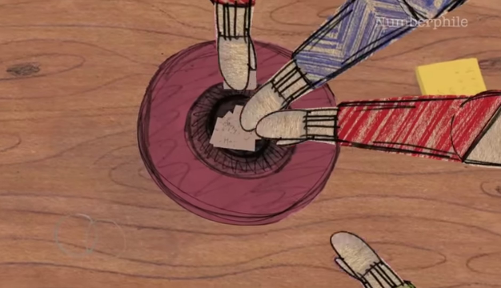] --- # Temeljna pogoja za popolno obdarovanje 1) Popolna anonimnost 2) Vsak sodelujoči mora imeti enako verjetnost, da te izbere nekdo drug. -- count:false ##Problem: V večini primerov pride do neupoštevanja obeh pogojev. Poglejmo kako. --- # Težave Težave se pričnejo pojavljati, ko nekdo povleče listek s svojim imenom. Če ta oseba ni zadnja pri žrebanju, lahko enostavno žreba nov listek. Kaj pa če zadnja oseba izžreba samo sebe? Največkrat se takrat žrebanje ponovi za vse ljudi. -- count:false ###Ampak kolikšna je verjetnost, da bo pri ponovnem žrebu zadnja oseba zopet žrebala sebe? -- count:false Če imamo 20 ljudi je 4% verjetnost, da bo zadnji žrebal ravno svoje ime. -- count:false Hkrati pa možnosti, da bi kdo žrebal ime koga drugega niso enotne. Odvisne so namreč od mesta kjer sedite oz. Kateri po vrsti boste žrebali listek. ###Kolikšna je verjetnost, da pri žrebu nihče ne žreba samega sebe? --- # Igralci A, B, C Denimo, da imamo 3 igralce -> A, B in C. Možni izidi žrebanja so: .center[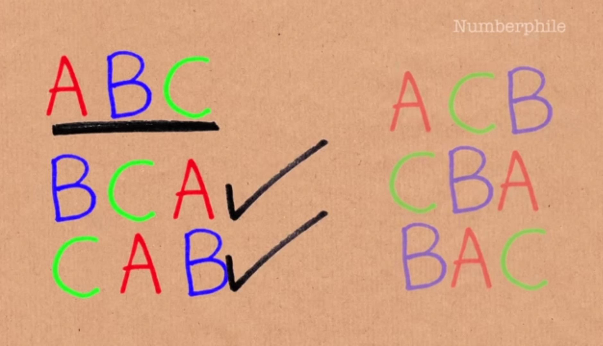] Od katerih sta najboljši le dve, saj v teh dveh primerih nihče ne žreba samega sebe. Neuspešne možnosti so prikazane na spodnjih slikah. <div> 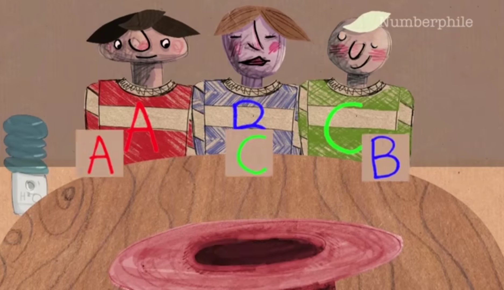 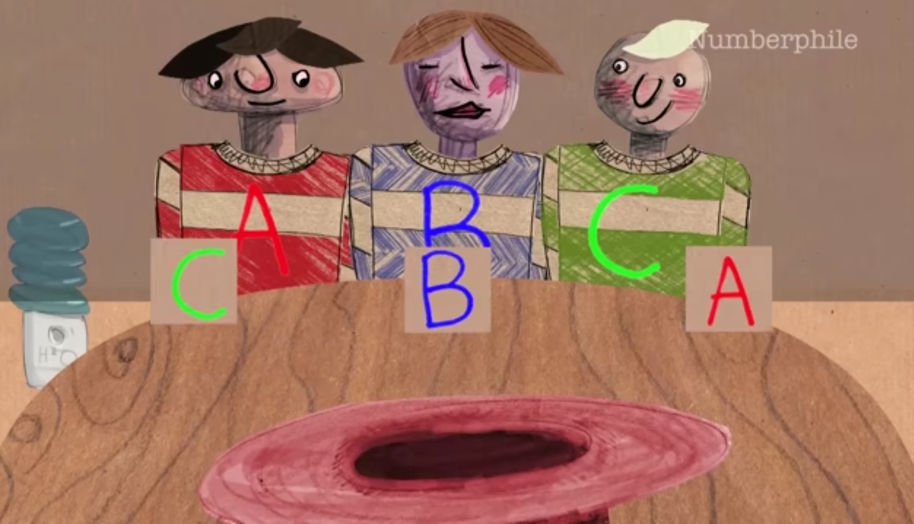 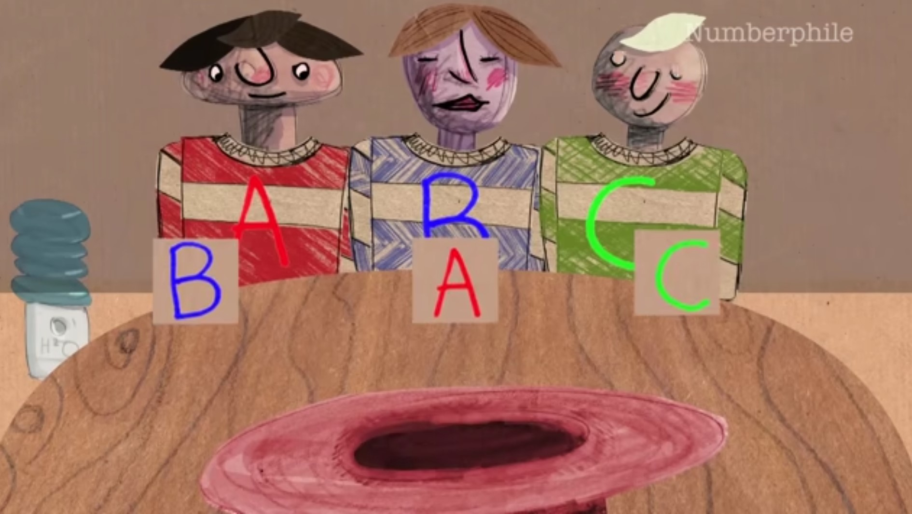 </div> --- ##Računanje verjetnosti Z žrebanjem prične igralec A. Če izžreba listek A, ga vrne nazaj v klobuk in ponovno žreba. Edini dve primerni možnosti žreba sta B ali C. Oba izida imata 50% verjetnost. Denimo da A izžreba B. Zdaj je na vrsti oseba B, ki lahko iz klobuka izžreba A ali C. Spet imata oba izida 50% verjetnost. Če B izžreba A, potem osebi C ostane le C, kar pa je nevejaven izid.Če pa oseba B žreba C, potem osebi C preostane le listek A s 100% verjetnosti. Naslednji primer se zgodi, ko A izžreba listek C. Oseba B ima tako 100% verjetnosti, da izžreba osebo A, saj sta v klobuku le B in A. Oseba C ima na koncu zopet 100% verjetnosti, da izžreba liste B. vse možne poti z verjetnostmi vred so prikazane na spodnji sliki. .center[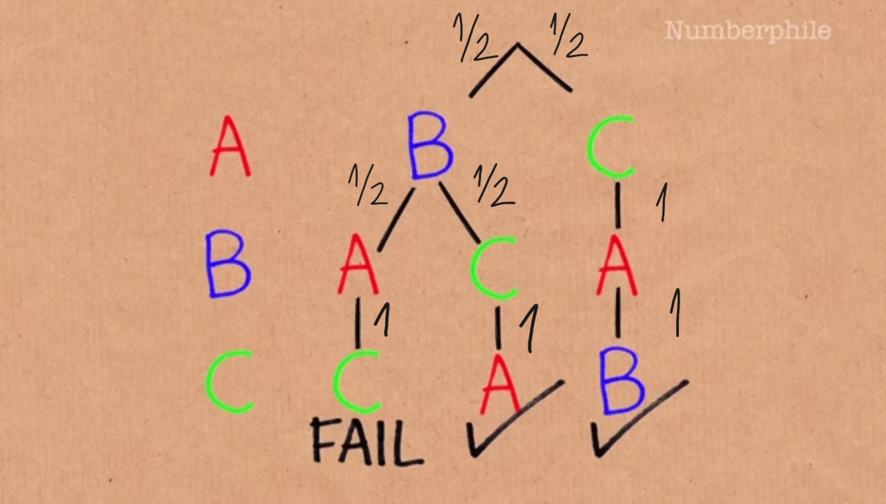 ] --- ## Izračun Zmnožimo vse verjetnosti, ki jih imamo na vsaki možni poti in dobimo naslednje rezutate. .center[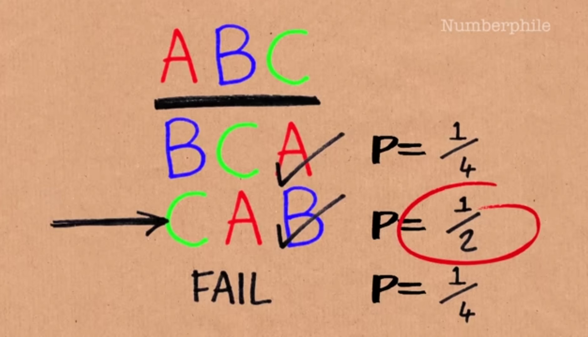 ] Vidimo lahko, da je 50% verjetnost, da se bo zgodilo, da bo A izžrebal C, B izžreba A, oseba C pa B. Vidimo tudi, da je velika verjetnost, da prva oseba, ki žreba, izžreba ravno zadnjo osebo. tako lahko razmislimo kam bi se usedli za mizo oz. kateri po vrsti bomo žrebali. .center[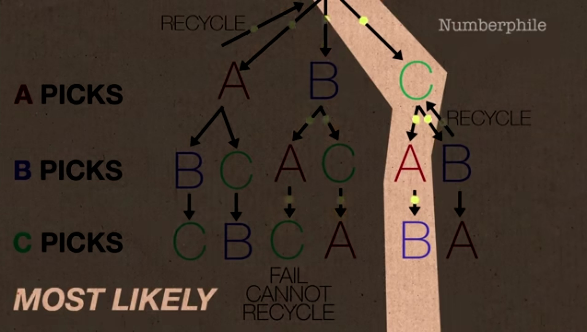 ] --- # Kako izboljšati igro? Kako spremeniti žrebanje, da nikoli ne bo prišlo do kršenja anonimnosti in da bodo imeli vsi sodelujoči hkrati enake možnosti, da jih izžreba nekdo drug? V videu predlagajo, da en list razdelimo na dva dela s horizontalno črto. na zgornji del se napiše „Ti si številka 4.“ na spodnji del pa „Obdaruješ številko 4.“. Pomembno je, da na isti list napišemo isti številki. Naredimo toliko listov, kolikor bo sodelujočih. Nato vse liste obrnemo navzdol in jih položimo v ravno linijo. Nato jih premešamo tako, da še vedno ostanejo v ravni liniji. Ko jih premešamo, jih prerežemo na pol in zgornje polovice vse zamaknemo za eno v levo (lahko tudi v desno). Vsak sodelujoči tako vzame en listek iz zgornje vrste in listek ki je pod njim. Ne vzame naključno dveh listkov, ampak nujno dva, ki ležita en pod drugim. Na koncu napišemo še seznam kdo je katera številka zgolj zato, da vsak ve koga obdaruje, a hkrati nihče ne ve kdo obdaruje njega. <div> 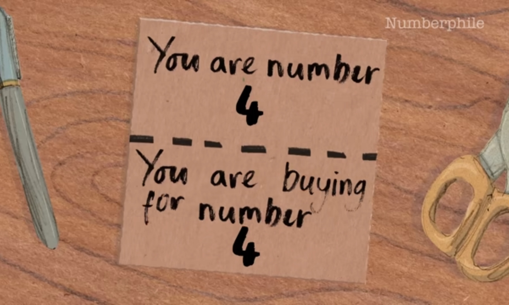 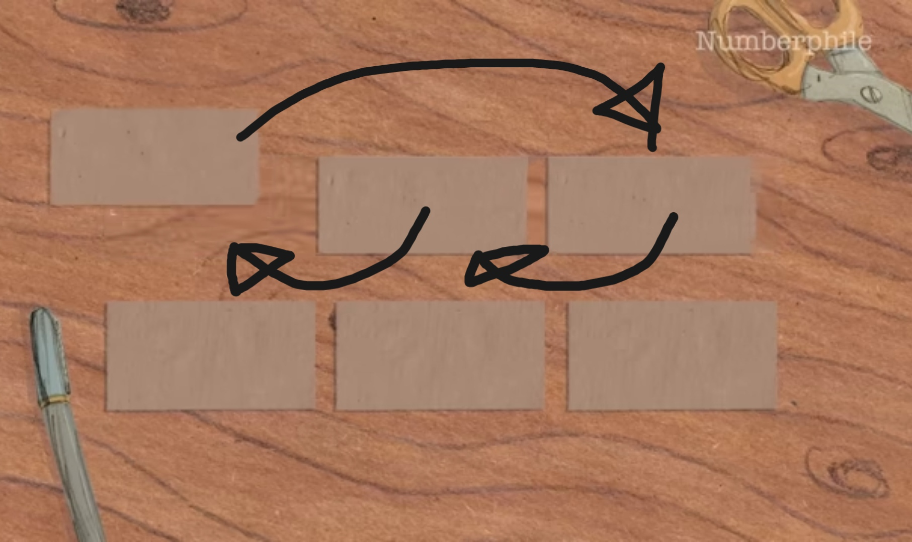 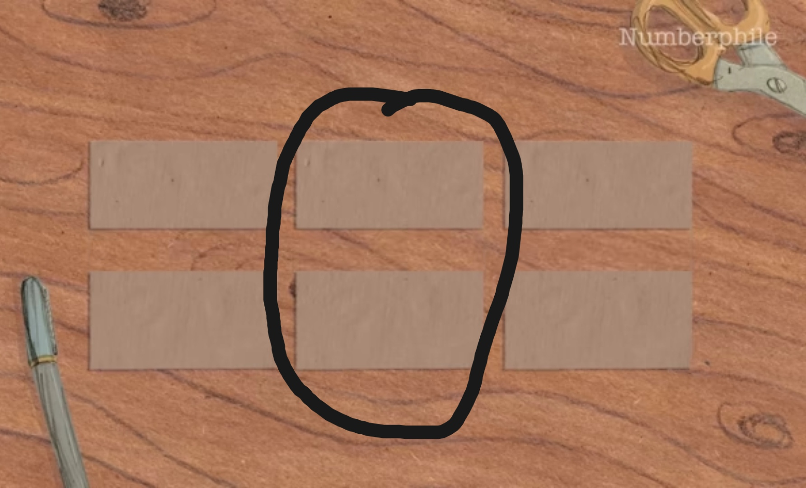 </div> --- # Ostale alternative Lahko uporabimo tudi kako spletno stran ali aplikacijo, kamor napišemo vsa imena in aplikacija namesto nas naredi tak žreb, da nihče ne dobi samega sebe in imajo hkrati vsi sodelujoči enakomerne možnosti, da jih izžreba kdo drug. Ampak mar ni bolj zabavno, ko izdelujemo listke, jih žrebamo in se zabavamo brez računalnika? -- count:false Pa vesele praznike!